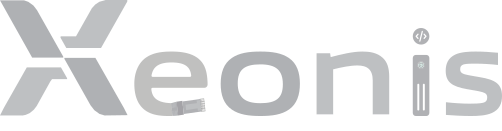

HTL 3 Rennweg Diplomarbeit 2026/27
Virtualisierung trifft Automatisierung.
Nachdem wir nun schon 4 Jahre Unterricht an der HTL Rennweg genießen durften, wollen wir nun zeigen, was wir alles in diesen Jahren gelernt haben. Dabei wollen wir viele Bereiche der IT bzw. der Netzwerktechnik verbinden um zu zeigen, was alles (auch im schulischen Rahmen) möglich ist.
Grundlegend für unsere Diplomarbeit ist die im Serverraum der HTL vorhandene Hardware, wobei unser Team hier ein Rack betreibt.
Projektziele
Was Xeonis leisten soll
Mit viel Hardware allein ist natürlich noch kein Projekt geschaffen.
Unsere Diplomarbeit lässt sich grob in 8 Bereiche aufteilen, die gemeinsam ein System bilden: von der physischen Hardware im Rack bis zum automatisierten Aufbau von Netzwerktopologien und die Weiterverwendung dieser. Jeder dieser „Bereiche“ ist ein eigener Teil unserer Diplomarbeit.
Am Ende wollen wir eine Umgebung erschaffen, welche Hardware, Virtualisierung, Automatisierung (und Deployment), Security und LLMs miteinander vereint. Dabei wollen wir auch auf Open-Source / kostenfreie Tools zurückgreifen, um zu zeigen, was alles im schulischen Rahmen möglich ist. Zu zeigen, dass es mit teils stark veralteter, aber hochwertiger Hardware möglich ist, up-to-date Software zu verwenden ist auch ein Ziel, das wir uns gesetzt haben. Natürlich darf am Ende auch eine entsprechende Dokumentation nicht fehlen.
-
01
Hardware & OS
Die Hardware im Rack ist strukturiert verkabelt, dokumentiert und regelmäßig geprüft. Alle Ressourcen sind per IPsec-VPN remote erreichbar und folgen einem einheitlichen IP-Konzept.
-
02
UCS-System
8 Blade-Server werden über den UCS-Manager mit Service-Profiles konfiguriert und als ESXi-Testumgebungen bereitgestellt. Zusätzlicher Speicher kommt über Fibre Channel vom EMC-VNX-Storage.
-
03
Dokumentation
Rackplan, IP-Konzept, Tool-Erfahrungsbericht und Diplomarbeitsbuch halten den Projektstand nachvollziehbar fest. Der gesamte Code ist in Git-Repositories versioniert.
-
04
Virtualisierte Infrastruktur
Management-, Storage/NAS- und Monitoring-VMs bilden die Infrastruktur der virtuellen Umgebung.
-
05
TopologyBuilder
Unser Kernstück: er erstellt automatisiert virtuelle Netzwerktopologien aus einem Konfigurationsfile.
-
06
APIs & Backend-Services
Eigene REST-APIs stellen die verfügbaren ESXi- und GNS3-Templates zentral bereit und binden das LLM an. Der TopologyBuilder greift darauf zur Laufzeit zu.
-
07
Security-Pipeline & Report
Evaluierte Security-Tools wie Batfish oder Lynis prüfen Netzwerkgeräte, Linux-Systeme und Firewalls der Topologien automatisiert und fassen die Befunde in einem Report zusammen.
-
08
LLM-Server
Ein lokal gehosteter LLM-Service wandelt geschriebene Beschreibungen einer Topologie in ein passendes Konfigurations-Datenformat um.
Unser Ergebnis soll zeigen, was mit den Skills, die Schüler*innen in der Netzwerktechnik erlernen, und der Hardware, die in der Schule zur Verfügung steht, alles möglich ist. Wir wollen, neben dem Ziel, ein hilfreiches Tool zu schaffen, auch in der schulischen Umgebung zeigen, wie viele Dinge in der Netzwerktechnik und verwandten Bereichen zusammenhängen.
Ergebnis
Ginnungagap
Aus Xeonis ist Ginnungagap entstanden: eine Appliance, die virtuelle Netzwerktopologien plant, aufbaut und testet. Alle Komponenten sind Open Source.
- Ginnungagap ApplianceFertiges Image mit allen Diensten, Installation und Updates
- IgdrasylWeb-Oberfläche zum Entwerfen, Aufbauen und Verwalten
- Mjonyr (TopologyBuilder)Baut die Topologien auf ESXi und GNS3 auf
- MimyrEntwirft Topologien aus einer Beschreibung mit einem Sprachmodell
- Hugyn and MunynTemplate-Dienste für ESXi und GNS3
- SecurityPipelinePrüft Topologien automatisiert und erstellt einen Report
Projektstatus
In Zahlen
Hardware
Software auf GitHub
Software: öffentliche Repositories auf GitHub, Stand –.
Rackplan
Unser Rack
Unterstützer